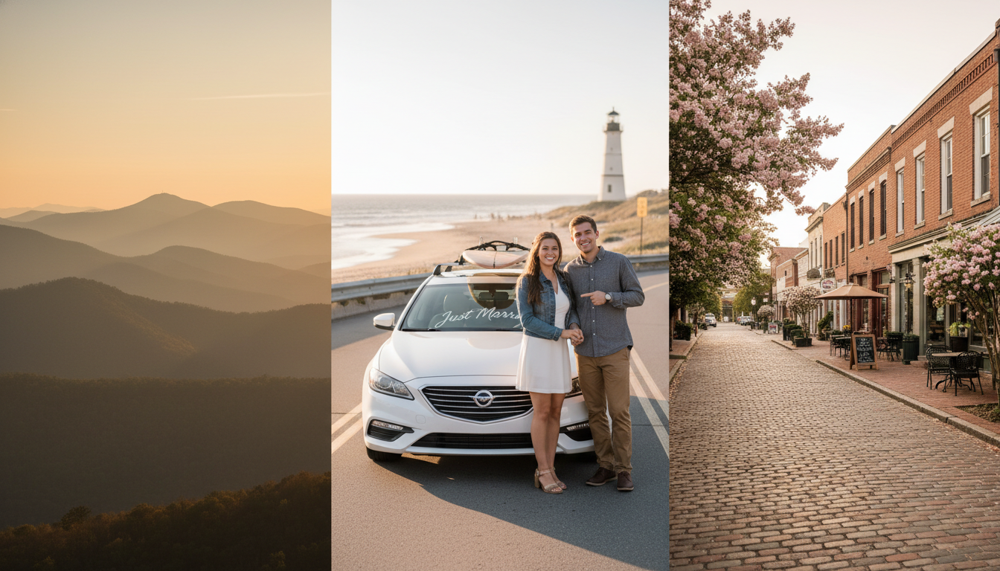

In North Carolina, getting married typically lowers car insurance premiums by 8% to 14% in 2026. For an average driver in Surry or Wilkes County, this equals an annual savings of roughly $120 to $200 when combining policies, due to lower statistical risk and multi-car discounts.
Share this NC guide: 🟦 Facebook | 🔗 Copy Link
Here is a realistic breakdown of monthly premiums for a standard policy (50/100/50 liability) in the Elkin/Mount Airy area:
| Driver Profile | Avg. Monthly Premium | Annual Cost |
|---|---|---|
| Single Male (30) | $115 | $1,380 |
| Single Female (30) | $110 | $1,320 |
| Married Couple (Combined) | $198 | $2,376 |
| SAVINGS (Per Person) | ⬇️ ~$14/mo | ⬇️ ~$162/yr |
*Estimates based on clean driving records in Zip Code 28621. Rates vary by carrier.
Weddings in 2026 are expensive. Between the venue, the catering, and the honeymoon, your bank account might be feeling the heat. But here’s the good news: The "Wedding Tax" doesn't apply to your car insurance. In fact, getting hitched is one of the few life events that almost guarantees a price drop.
At Bill Layne Insurance here in Elkin, we help newlyweds navigate this merge every week. It’s not just about changing a last name; it’s about strategically combining assets to unlock discounts that single drivers simply can't get.
It comes down to cold, hard data. Insurance companies love predictability.
1. Stability = Safety:
Actuarial data (the math behind insurance) consistently shows that married drivers are less likely to get into accidents, less likely to get speeding tickets, and more likely to wear seatbelts compared to their single counterparts.
2. The "Bundling" Effect:
Most savings don't come from the status change alone, but from the Multi-Car Discount. In North Carolina, when you insure two vehicles on the same policy, carriers often knock 15-25% off the total bill.
NC insurance laws are unique. Here is what newlyweds in Surry, Yadkin, and Wilkes counties need to know:
Don't just auto-renew. Follow these steps to maximize your marital savings:

Enter your current combined monthly premiums (separate) to estimate your bundled savings.
No, North Carolina does not recognize common-law marriage. To legally qualify for the "married" rating factor and specific spousal discounts, you must be legally married. However, some carriers allow domestic partners to share a policy if they live at the same address.
You might want to keep policies separate. In NC, Safe Driver Incentive Plan (SDIP) points can drastically increase premiums. If your spouse has significant points, adding them to your policy could ruin your "clean risk" status. Call us to run the numbers both ways.
It is recommended, but not immediately required. However, the name on your insurance policy should match the name on your NCDMV registration and driver's license to avoid confusion during a claim or traffic stop.
Yes, North Carolina allows "stacking" of Uninsured/Underinsured Motorist (UM/UIM) coverage. When you combine policies onto a multi-car plan, this inter-policy stacking can provide significantly higher protection limits if you are injured by an uninsured driver.
Don't leave savings on the table. Bill Layne Insurance has served the Yadkin Valley for over 20 years.
📞 Call 336-835-1993 ✉️ Email for a QuoteGet seasonal safety tips and local updates from Elkin's insurance team.